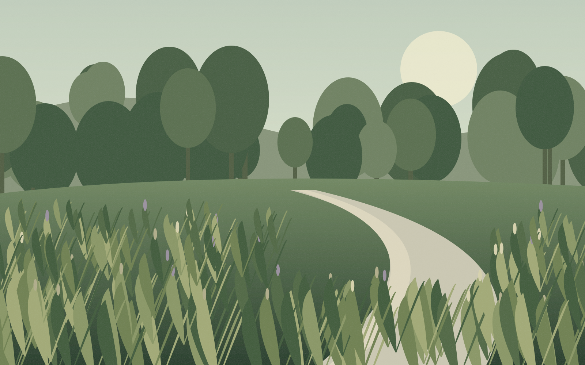
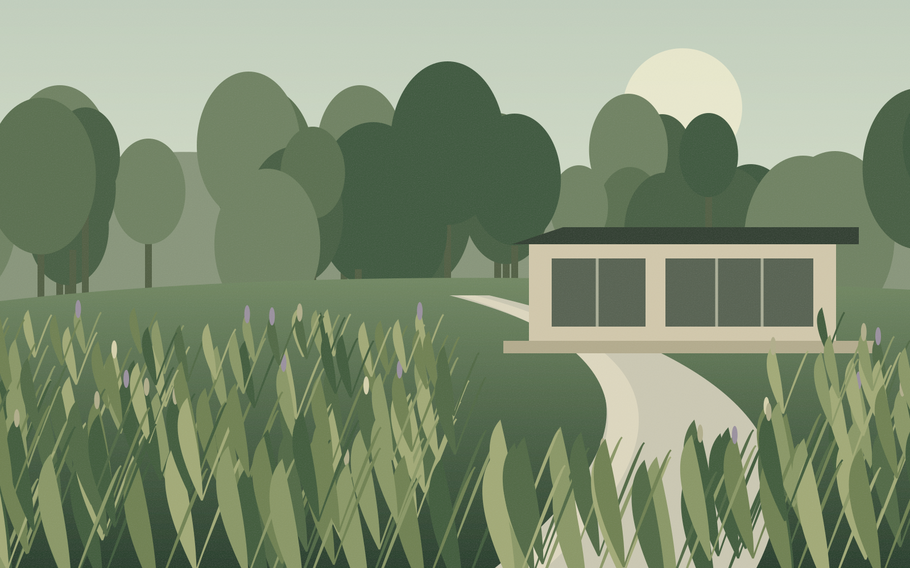
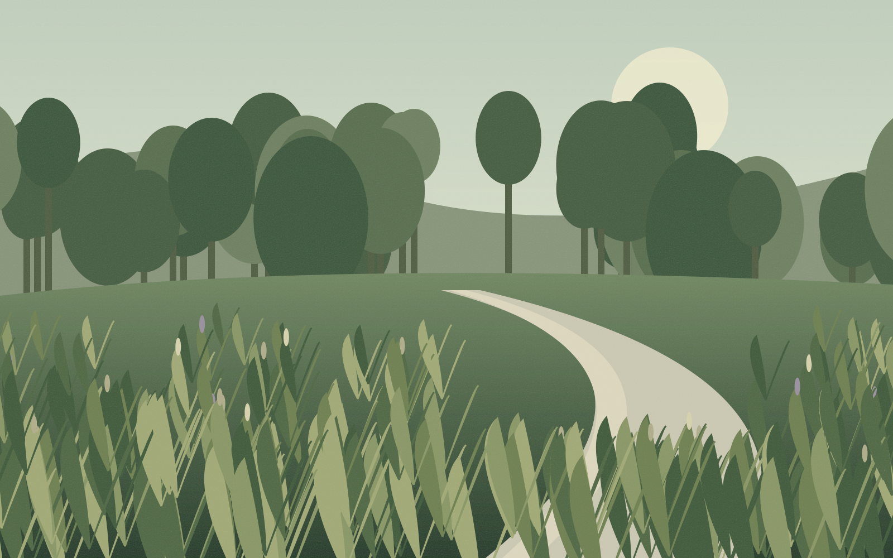
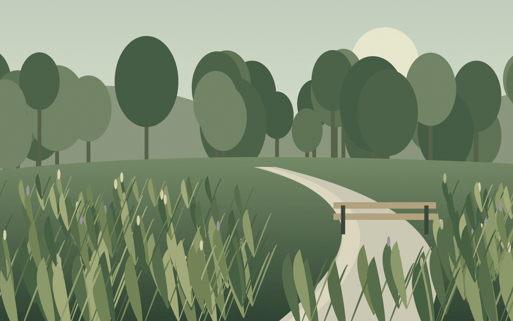

⌁
Ландшафтне проєктування
Знайомимося з ділянкою та вашими мріями. Створюємо концепцію, візуалізації й детальний план майбутнього саду.
Обговорити задум ↗ПРИРОДА. АРХІТЕКТУРА. ВИ.
Створюємо сади, у яких хочеться залишитися.
Від першої ідеї — до вашого місця сили.
01 / ФІЛОСОФІЯ
❧Сад — це більше, ніж рослини. Це ранкова кава на терасі, босі ноги на траві й тиша, якої так бракує в місті.
Поєднуємо архітектуру, характер місця та ваш спосіб життя. Щоб кожна стежка мала сенс, а кожен сезон відкривав щось нове.
02 / ЩО МИ РОБИМО
Один партнер на всьому шляху.
Цілісне бачення. Продуманий результат.
Знайомимося з ділянкою та вашими мріями. Створюємо концепцію, візуалізації й детальний план майбутнього саду.
Обговорити задум ↗Втілюємо проєкт у життя: від підготовки ґрунту й доріжок до посадки останньої рослини та системи поливу.
Створити свій сад ↗Допомагаємо саду дорослішати красиво. Сезонний догляд, обрізка, підживлення й увага до кожної деталі.
Довірити турботу ↗03 / ОБРАНІ ПРОЄКТИ
Місця, що надихають нас.
Концепції майбутніх зелених просторів.
Добірка концепцій · ілюстрації передають задум майбутніх просторів

ПРИВАТНИЙ САДКонцепція природного саду · 12 соток

ТЕРАСАКонцепція зеленої тераси · 65 м²

ПРИВАТНИЙ САДКонцепція сімейного простору · 18 соток

ГРОМАДСЬКИЙ ПРОСТІРКонцепція міського скверу · 0,4 га
Ваші побажання, ритм життя та особливості ділянки — наша точка відліку.
Розробляємо концепцію, узгоджуємо деталі та прозоро плануємо бюджет.
Координуємо роботи й супроводжуємо кожен етап реалізації.
Підказуємо, як доглядати за садом, і допомагаємо йому розквітати.
05 / ДАВАЙТЕ ЗНАЙОМИТИСЯ
Розкажіть про свою ідею. Підготуйте звернення —
скопіюйте його для надсилання компанії.
Працюємо з приватними та громадськими просторами.
Демонстраційний сайт. Перед публікацією додайте підтверджені контакти компанії.